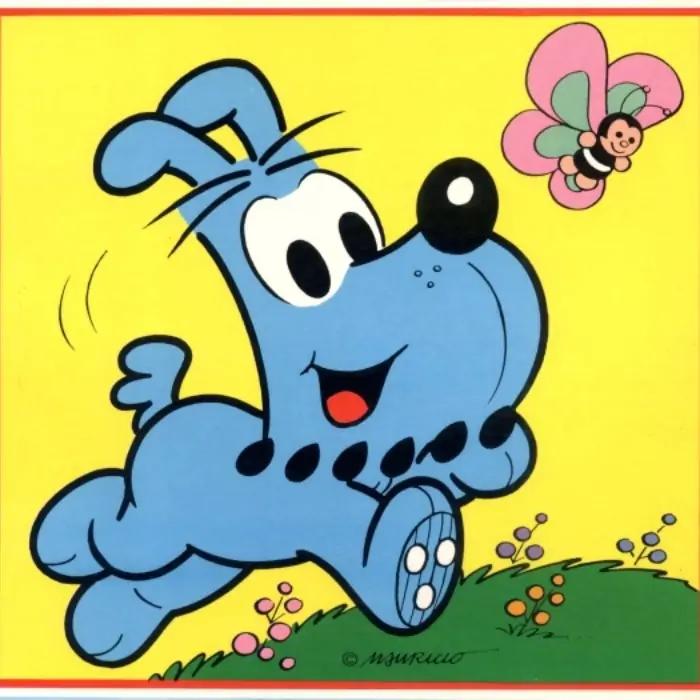
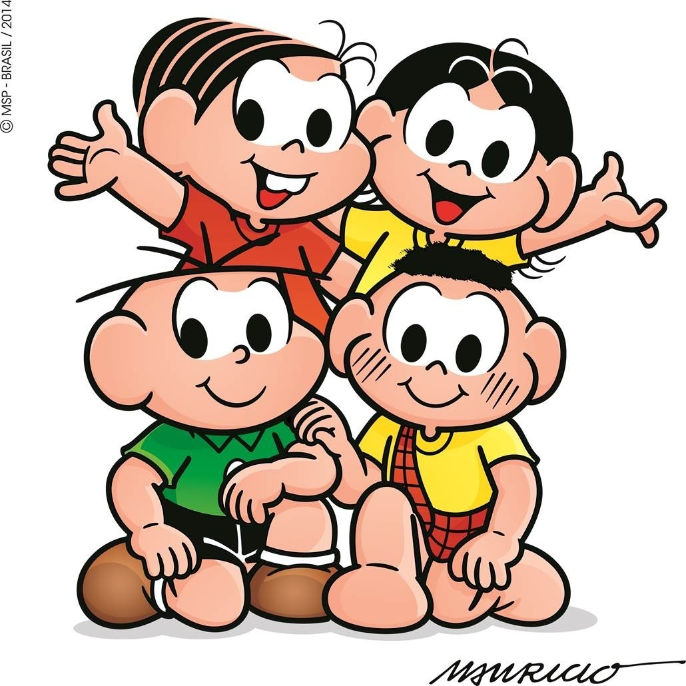
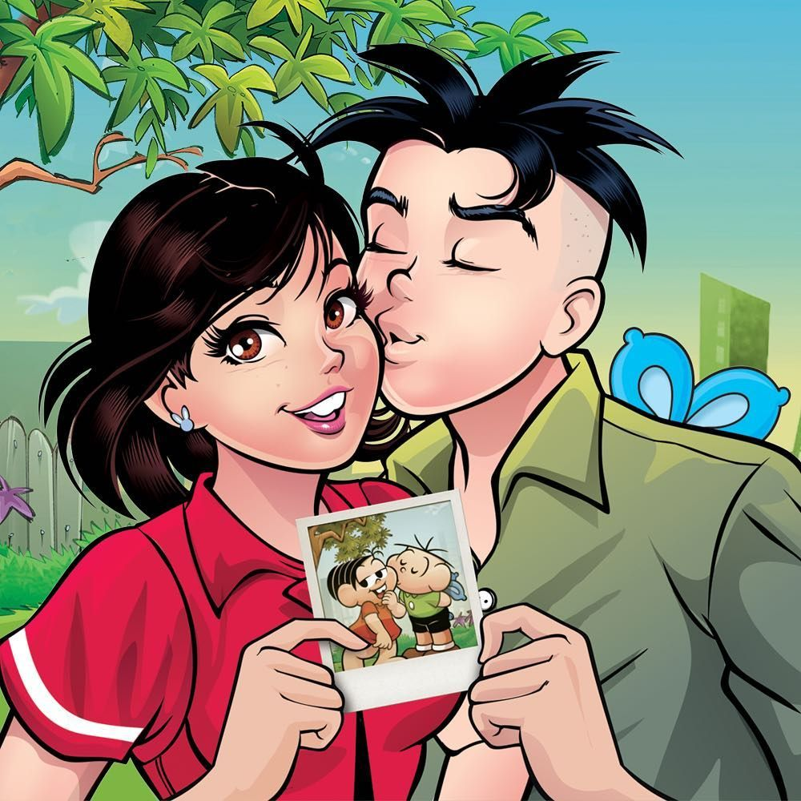

Nostalgia

Tirinha publicada na revista Mônica, na edição número 83, de novembro de 1993. Editora Globo.
Amado por muitas crianças, o cãozinho Bidu foi o primeiro personagem criado por Mauricio de Sousa.
Curiosamente, a maior parte dos personagens dos gibis da Turma da Mônica são inspirações reais da própria família. Mônica e Magali foram criadas referenciando as filhas de Mauricio e o Cebolinha e o Cascão, lembram amigos dele da turma da infância, em Mogi das Cruzes.

Eles cresceram! Maurício satisfez a curiosidade de diversos fãs ao mostrar como seria a vida da turminha na adolescência.
